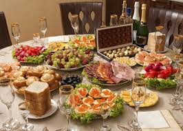
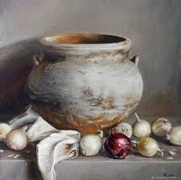

История

Особенности застолья
Русское застолье исторически строится на искреннем гостеприимстве, обильных угощениях и долгом совместном сидении. Хозяева всегда стремились накормить приглашённых до полного насыщения, демонстрируя тем самым уважение и открытость. Круглый стол символизировал единство семьи и гостей, укрепляя социальные связи.

Традиционная посуда
Бытовую культуру бережно сохраняли массивные глиняные горшки, резные деревянные миски и характерные ложки. Керамика отлично удерживала жар печей, а кринки и жбаны идеально подходили для подачи кваса, молока и медовухи. Со временем богатые семьи дополняли сервировку фарфором и стеклянными графинами.

Календарь и праздники
Национальная кухня тесно переплетена с земледельческим циклом и православным календарём. Масленицу традиционно встречали румяными блинами, Пасху украшали куличами, а Рождество обязательно включало сочиво. Строгие посты и скоромные периоды ритмично сменяли друг друга, диктуя сезонные ингредиенты и закрепляя праздничные рецепты в народной памяти.